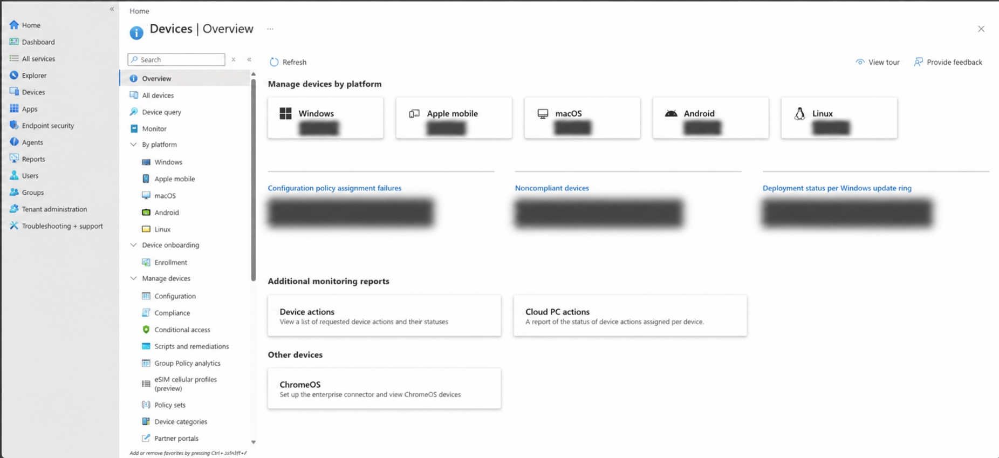
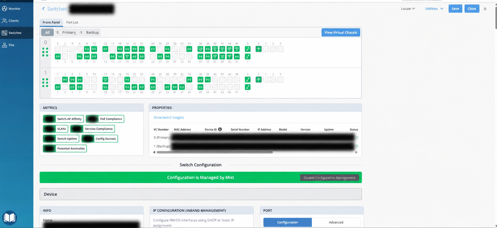
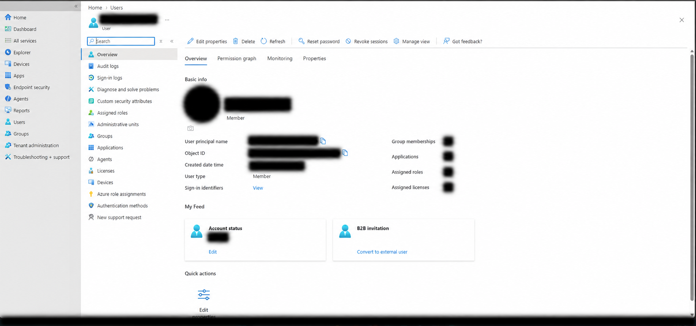
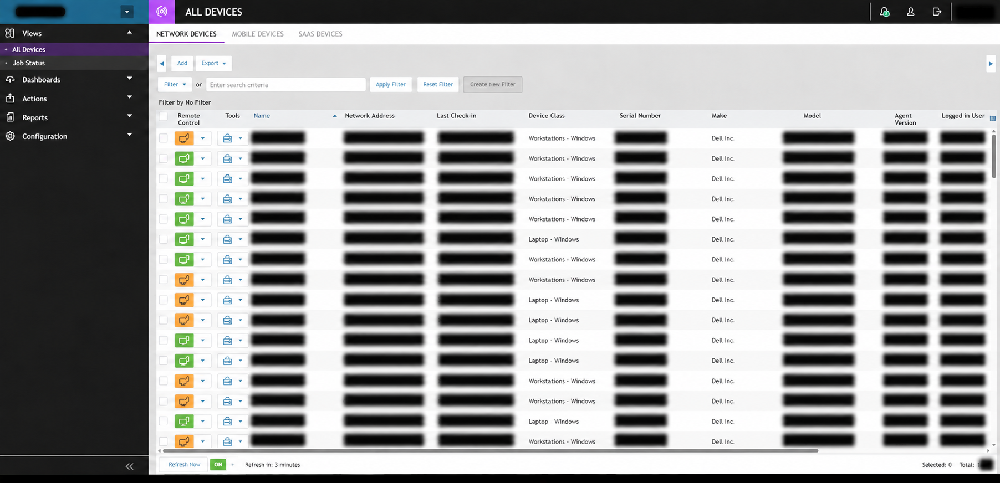
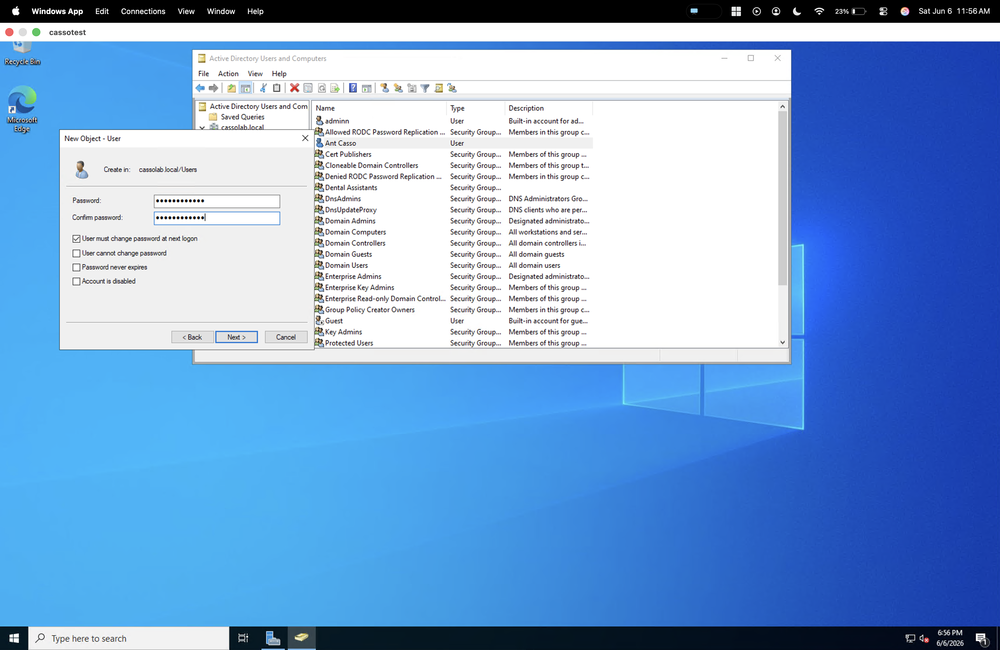
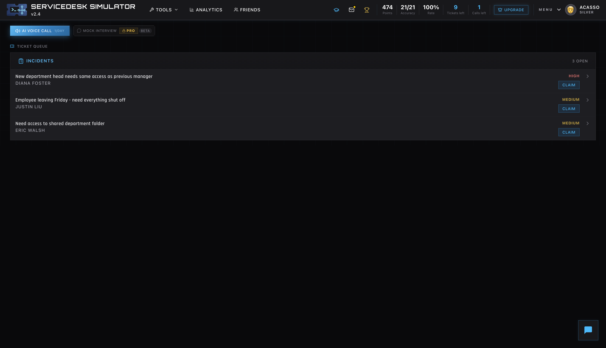

Accounts & endpoints
Administer Active Directory user accounts and support Azure- and Intune-managed staff devices. Deploy and troubleshoot laptops, desktops, printers, and peripherals.
Active Directory · Azure · Intune · Windows
Current work
At Splendido, my work connects staff support, endpoint administration, and campus infrastructure.
01 / Professional experience
At Splendido, my work connects staff support, endpoint administration, and campus infrastructure.
Administer Active Directory user accounts and support Azure- and Intune-managed staff devices. Deploy and troubleshoot laptops, desktops, printers, and peripherals.
Configure and troubleshoot Juniper Mist access points, Ethernet switches, and switch ports. Reconfigure voice ports for data connectivity to meet workstation needs.
Diagnose hardware, software, and connectivity issues. Coordinate network, telecom, and equipment vendors while tracking IT inventory and equipment lifecycle.
Independent consultingThrough Techboysgvs LLC, I also design and troubleshoot home and small-business networks, including firewalls, segmentation, secure remote access, and endpoint security.
02 / Professional work in practice
A closer look at endpoint, identity, and network administration through four examples from my IT work.
Screenshots are redacted for privacy. Account, device, and environment-specific details are obscured.

Device inventory by platform, configuration reporting, and compliance monitoring in Microsoft Intune.
View the work example
A virtual chassis and switch-port view, with monitoring metrics and centrally managed configuration.
View the work example
A user overview with account controls and views into group memberships, applications, roles, and licenses.
View the work example
An endpoint inventory with device classes, remote-control tools, and check-in reporting.
View the work example03 / Documented practice
Windows lab exercises and a support simulation, with screenshots of the actual steps.

Account creation, security group assignment, and directory review in Active Directory Users and Computers.
Explore the lab
A ticket workflow covering user review, group membership updates, and clear closure documentation.
Follow the scenario